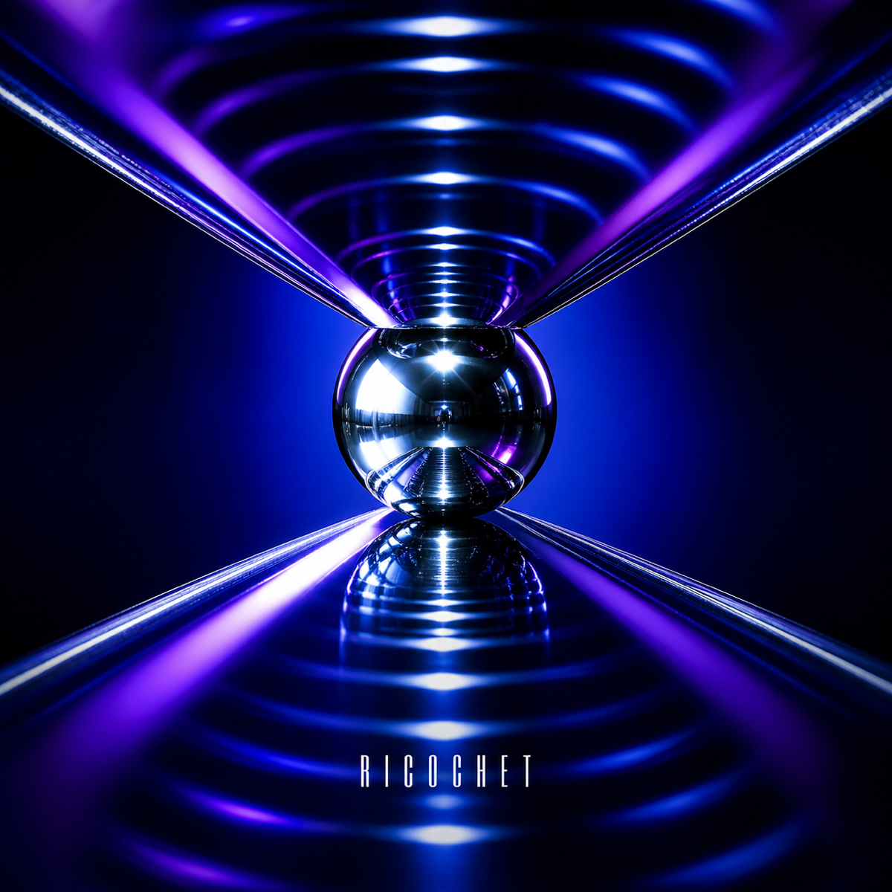
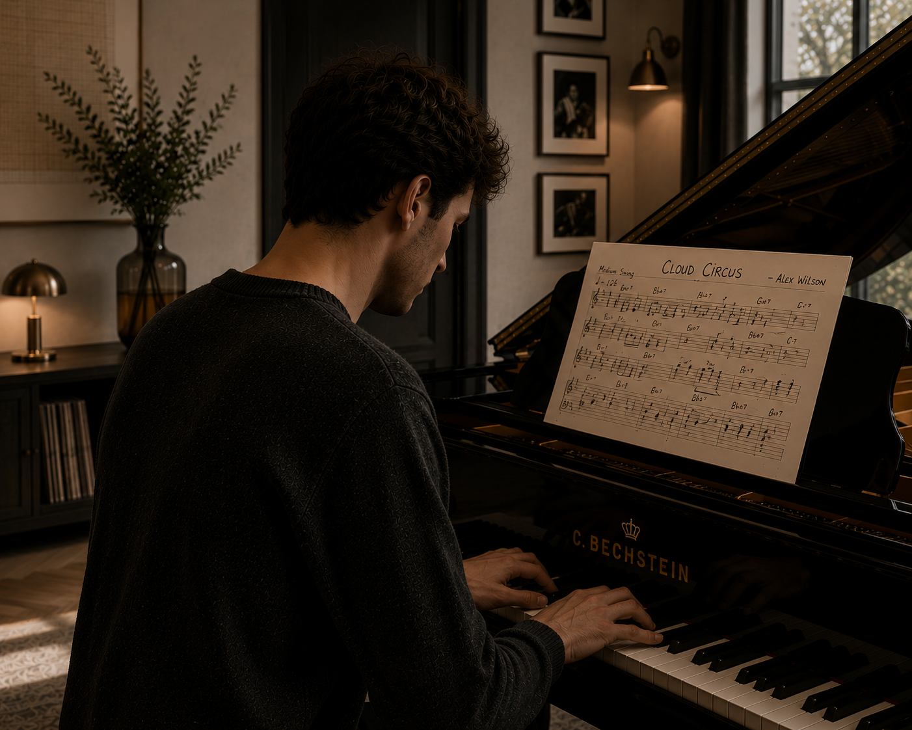
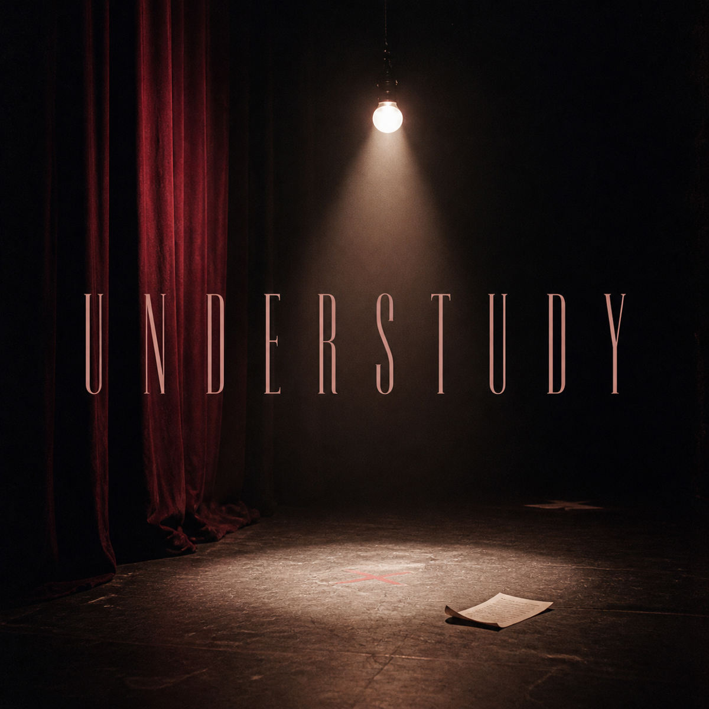
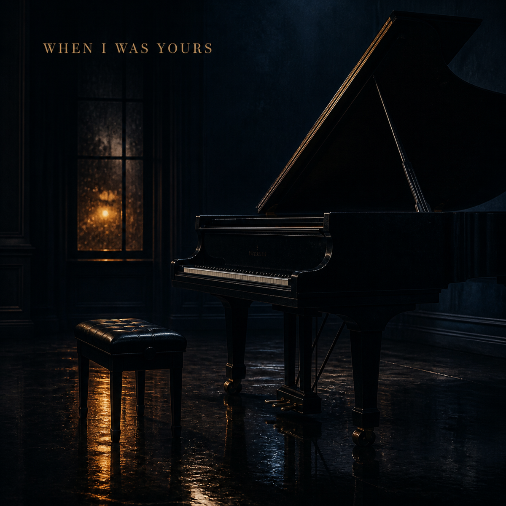
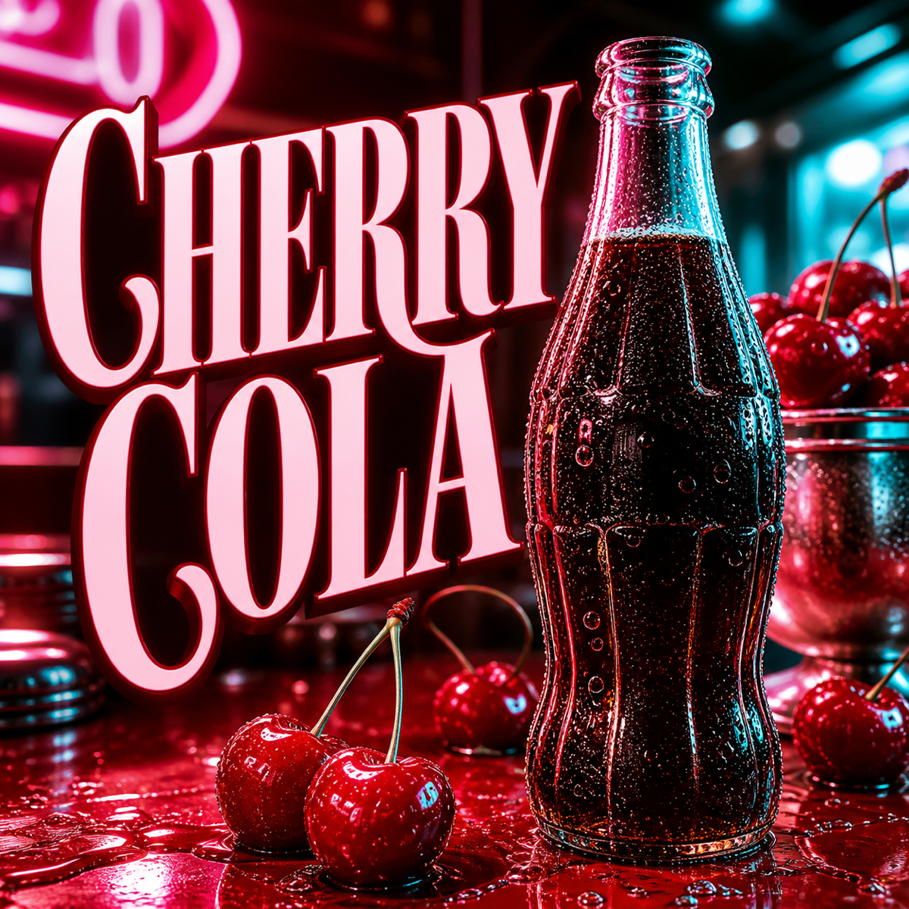
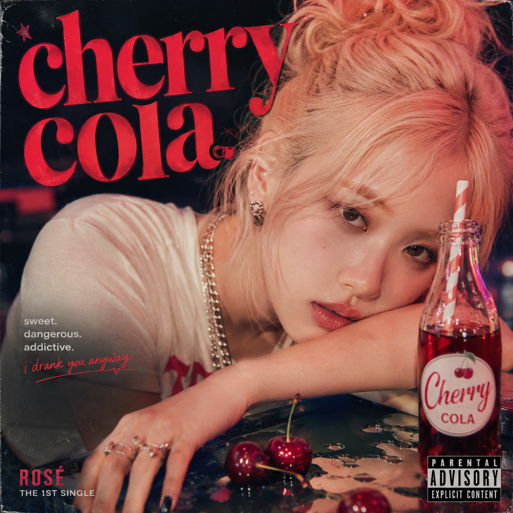

Dua Lipa · 2025
Ricochet
Written solely by Alex Wilson
0:003:14

Four public songs. Four performers. One writer.
Every released cut carries a direct Alex Wilson sole-writer credit. The records belong to the artists who perform them. Alex has not released as a recording artist.
Released recordings performed by their artists. Select a track to listen.

Dua Lipa · 2025
Written solely by Alex Wilson

Olivia Rodrigo · 2023
Written solely by Alex Wilson

Sam Smith · 2023
Written solely by Alex Wilson · Ivor Novello winner

Rosé · 2024 / 2025
Written solely by Alex Wilson

Written solely by Alex and first released across Asia in November 2024. Already a regional mega-hit, the recording received a worldwide single relaunch on 18 July 2025 alongside Pepsi's global campaign and entered the global top five.
Piano is principal. Public performances span the BBC Proms, BBC Young Musician, Glastonbury and the BRIT Awards, alongside studio sessions and a First-Class BMus from the Royal Academy of Music.
Gershwin's Rhapsody in Blue with the London Symphony Orchestra.
Winner on piano.
Featured piano beside Sam Smith on “Embers.”
BMus Performance: Piano Principal. First-Class Honours and the Principal's Prize.